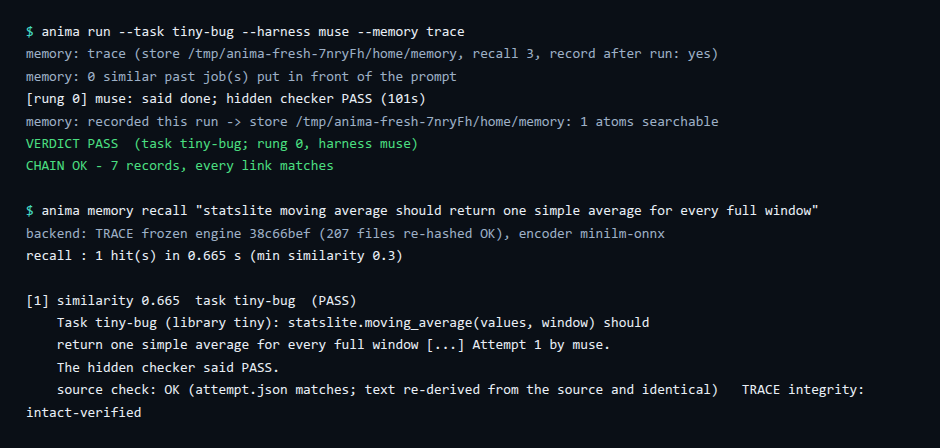

Features / Memory (TRACE)
Memory that carries over Working today
What an agent fixed or decided comes back in a later session, with a record of where it came from.
What it does
Coding agents forget everything when a session ends. ANIMA keeps a memory of what past jobs decided and fixed, and brings the most similar ones back when a new job comes up. Each recalled note carries a pointer to the file it came from, so you can check a note instead of trusting it. The store behind it is TRACE.
See it

Run it Working today
anima memory recall "statslite moving average should return one simple average for every full window"What exists today
Setup, record and recall run: anima memory setup prepares a local TRACE store; each anima run --memory trace records the run; anima memory recall brings back similar past fixes, showing only hits re-checked against their source (fresh-clone run: 1 hit, similarity 0.67, source check OK).
Limits
A small local store, not the 100-million-token library. Recall is only as good as the runs recorded. Setup needs the network once.
How to check it
Run:
anima memory recall "statslite moving average should return one simple average for every full window"Evidence file in this repository: docs/MEMORY.md
The memory behind it: TRACE
TRACE is our public sister project: search that shows its work. ANIMA uses it as its memory. This section is TRACE’s own record, not an ANIMA result. Every number here is our own measurement; no outside party has verified it.
passages in the sealed library we tested on: 99,891,846 tokens. The planned 100-million-token gate was waived: the library falls short by 108,154 tokens (0.11%).
of the rows scored per search, measured on one of the library’s four equal parts. About 127 times less scoring work than looking at everything.
of exact meaning-based search’s results kept, on 50 test searches (40 written questions and 10 taken from passage openings).
What that means, in plain words
- Sparse activation. A question wakes only the few groups likely to hold the answer; the rest of the library stays untouched. The term is borrowed from brain science: TRACE is inspired by it and does not work like a brain.
- Self-organizing, as an idea. TRACE is a self-organizing memory prototype: it sorts passages into groups on its own, with no labels added by people. The sorting is one ordinary automatic step (k-means). The idea is inspired by how brains organize memory; we do not claim TRACE works like a brain. What we measured: at every library size we tested (10,000 to 200,000 passages, one recipe), a passage’s ten closest matches fell in about 5 groups on average, where random groups would give 10. For the 50 test searches on our 100-million-token library it was about 7 groups out of 10. This measures how ordered the finished grouping is. It does not show order arising over time, and we do not claim it improves as the library grows. TRACE’s own site tells this story.
- A checkable record on every answer. Each result carries a record of where it came from, with a fingerprint you can recompute yourself.
Earlier, larger tests (ours, kept apart from the numbers above)
- 504,480,146 tokens. Around 28 October 2026 we sealed a TRACE memory of 504,480,146 tokens in 13 parts on a cloud machine. That machine has since been shut down, so this test cannot be re-run. It is an earlier test by us, recorded in our own receipts, and nobody outside has checked it.
- 1.53 billion tokens, routing only. A separate test on rented GPUs (16 October 2026) turned 1,531,809,092 tokens of a different, larger collection into 7,134,906 searchable vectors in 109 pieces. A search that looked only at the most likely groups kept 0.9947 of the exact top ten while looking at 6.6% of the vectors. This tested routing only: there is no merged index, it was not served through TRACE, there are no checkable records at that scale, and it is not a one-billion-vector run.
Limit Where TRACE does not win
- On the same 50 test searches, ordinary keyword search put the right source passage in its top ten for 82% of searches. TRACE did for 52%, and so did exact meaning-based search, so the gap is meaning-search against keywords, not TRACE’s shortcut.
- Keyword search also had the shorter response time: 6 milliseconds against 1.2 seconds for TRACE. TRACE is for meaning-based search you can verify, not a replacement for keyword search.
- Stored size on disk: TRACE 2.28 GB, exact vectors 1.25 GB, keyword index 0.51 GB.
- TRACE has not been run on public benchmarks. A simple stand-in grouping we tried on three small public sets did not reproduce the 0.79% result at that small size, so the result is for our library and our method only.
- There is no public query service. The TRACE explorer replays real recorded searches in your browser.